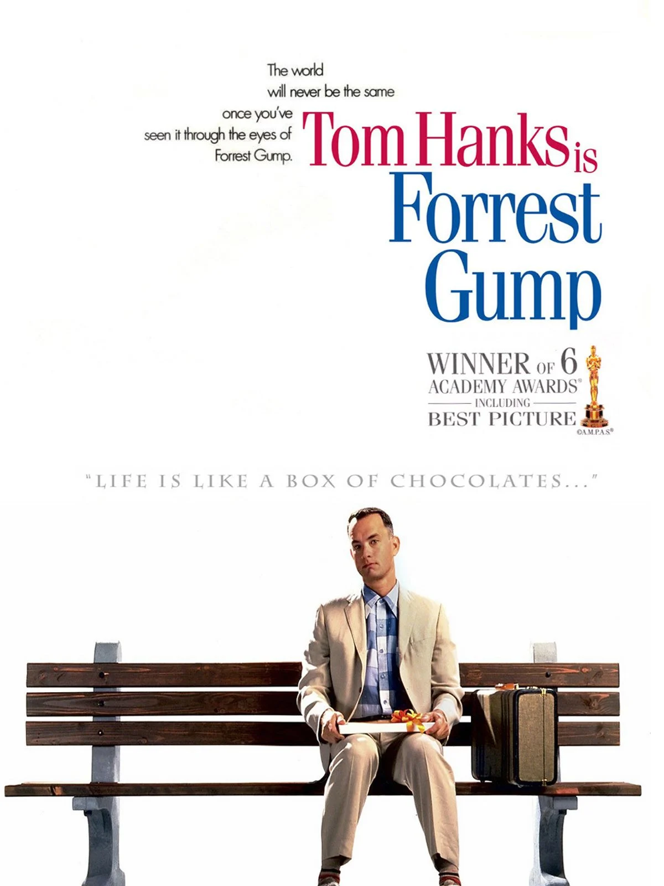

导演：罗伯特·泽米吉斯
编剧：温斯顿·格鲁姆 / 艾瑞克·罗斯
主演：汤姆·汉克斯 / 罗宾·怀特 / 加里·西尼斯 / 莎莉·菲尔德
类型：剧情 / 爱情
制片国家/地区：美国
语言：英语
上映日期：1994-07-06（美国）
片长：142 分钟
阿甘出生于美国南方小镇，智商只有 75，却凭着真诚、善良和永不放弃的劲头，一路跑过了童年伙伴的歧视，跑进了大学橄榄球队，跑过了越南战争的枪林弹雨，又作为乒乓球选手见证了中美外交，还阴差阳错地成为捕虾船的船长。他的一生见证了美国几十年的历史变迁，而他的心里，始终装着青梅竹马的珍妮。妈妈说，人生就像一盒巧克力，阿甘用自己的方式，跑出了属于自己的精彩人生。